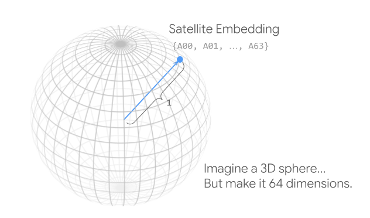

4. AI-powered pixels: Introducing Google’s Satellite Embedding dataset#
Valerie Pasquarella, AI-powered pixels: Introducing Google’s Satellite Embedding dataset, Research Scientist and Emily Schechter, Product Manager, Google, accesible en: https://medium.com/google-earth/ai-powered-pixels-introducing-googles-satellite-embedding-dataset-31744c1f4650
Presentamos una nueva forma de analizar el planeta. El conjunto de datos de Integración Satelital de Google utiliza el poder de la IA para comprimir un año de datos satelitales de múltiples fuentes en cada píxel de 10 metros, lo que permite un análisis geoespacial más rápido y potente. Bienvenido al futuro del aprendizaje profundo en Earth Engine.
Hace quince años, lanzamos Earth Engine con la misión de brindar acceso generalizado a imágenes de observación de la Tierra y datos geoespaciales. A medida que añadimos petabytes de datos disponibles públicamente al Catálogo de Datos de Earth Engine, este ambicioso objetivo ha planteado un nuevo desafío: ¿cómo pueden los usuarios aprovechar eficazmente los crecientes archivos de imágenes y la multitud de datos y algoritmos para abordar los problemas ambientales más urgentes del mundo? Respuesta: ¡El poder de la IA!
Hoy nos complace presentar nuestro nuevo conjunto de datos de incrustación satelital, producido en colaboración con Google DeepMind. Este conjunto de datos, pionero en su tipo, se generó utilizando AlphaEarth Foundations, el nuevo modelo de IA geoespacial de Google DeepMind, que integra observaciones de diversas fuentes de información geoespacial, incluyendo imágenes ópticas y térmicas de los satélites Sentinel-2 y Landsat, datos de radar capaces de ver a través de las nubes, mediciones 3D de propiedades superficiales, modelos de elevación global, información climática, campos de gravedad y texto descriptivo. A diferencia de los modelos tradicionales de aprendizaje profundo, que requieren que los usuarios ajusten las ponderaciones y ejecuten sus propias inferencias en clústeres de ordenadores de alta gama, AlphaEarth Foundations se diseñó para producir incrustaciones geoespaciales de 64 dimensiones, ricas en información, compatibles con los clasificadores de aprendizaje automático integrados de Earth Engine y otros análisis basados en píxeles.
Hemos ejecutado AlphaEarth Foundations a gran escala para producir un conjunto de datos global de embeddings precalculadas y listas para el análisis, con una resolución de 10 metros, para cada año desde 2017. Si bien esto puede parecer una colección de imágenes estándar de Earth Engine, hemos integrado eficazmente la extracción de características con IA en cada píxel, y puedes usar estas “imágenes” de embeddings en lugar de composiciones de imágenes más convencionales y características diseñadas, como índices espectrales y ajustes armónicos. Lo mejor es que las capas de embeddings están listas para el análisis; no se requieren correcciones atmosféricas, enmascaramiento de nubes, transformaciones espectrales, filtrado de moteado ni otras técnicas de caracterización; solo resultados superiores con menor esfuerzo y complejidad.
4.1. ¿Qué se incrusta en una incrustación?#
Mediciones. Las embeddings geoespaciales generadas por AlphaEarth Foundations se aprenden a partir de diversas fuentes de datos del Catálogo de Datos de Earth Engine y etiquetas de texto geotemporales. El modelo utiliza un enfoque autosupervisado que permite el aprendizaje de diversos tipos de datos simultáneamente sin necesidad de anotaciones manuales en los datos de entrenamiento. Al asimilar información de múltiples fuentes y modos de descripción, incluyendo el SAR de banda C de Sentinel-1, el multiespectral Sentinel-2 y observaciones multiespectrales, pancromáticas y térmicas de Landsat 8 y Landsat 9, las métricas de altura de dosel ráster de GEDI, el DEM GLO-30, los agregados mensuales de reanálisis terrestre de ERA5, el ScanSAR de ALOS PALSAR-2, las cuadrículas de masa mensuales de GRACE y diversas fuentes de texto, AlphaEarth Foundations puede aprender una representación más compacta de las propiedades y la semántica de los píxeles.
Contexto espacial y temporal. AlphaEarth Foundations se entrenó con más de 3 mil millones de fotogramas de imágenes individuales muestreados en más de 5 millones de ubicaciones a nivel mundial. Al tratar las imágenes satelitales de una ubicación dada a lo largo del tiempo como si fueran fotogramas de un video, el modelo puede aprender a través del espacio, el tiempo y el modo de medición para producir incrustaciones que capturan el contexto espacial y preservan las trayectorias temporales. Esto significa que cada vector de incrustación en el conjunto de datos de incrustación satelital proporciona una representación altamente compacta, pero semánticamente rica, de las condiciones de la superficie para cada área de 10 metros de píxel (100 metros cuadrados) de la superficie terrestre de la Tierra. Los embeddings de cada píxel de 10 metros también captura información sobre el área alrededor de ese píxel, de modo que áreas que parecen muy similares cuando se consideran de forma aislada, por ejemplo, las superficies de asfalto de un estacionamiento o una autopista, tendrán embeddings bastante distintas. Y en el caso de nuestra colección GOOGLE/SATELLITE_EMBEDDING/V1/ANNUAL, las incrustaciones resumen un año completo de adquisiciones de imágenes, lo que significa que incluyen señales estacionales, como la fenología de la vegetación o la cubierta de nieve estacional y otros eventos de cambio dentro del año.
Alpha foundations paper: https://arxiv.org/pdf/2507.22291
4.2. La Tierra en 64 dimensiones: Coordenadas versus bandas#
Las imágenes del conjunto de datos de incrustación de satélites tienen 64 bandas, pero no son como las clásicas de reflectancia óptica o retornos de radar. Más bien, las 64 “bandas” de un solo píxel en nuestra incrustación de AlphaEarth Foundations representan una coordenada de 64 dimensiones en la superficie de una “esfera” de 64 dimensiones. De forma similar a como necesitamos la latitud, la longitud y la elevación para describir con mayor precisión nuestra posición en la superficie de la Tierra, necesitamos los 64 ejes de la representación de AlphaEarth Foundations para definir con precisión una coordenada de incrustación de satélites. Si bien es tentador querer explicar estos ejes, es importante recordar que las incrustaciones se aprenden mediante un modelo de aprendizaje profundo. Si bien matemáticamente son muy explicativas, son representaciones de un espacio de mediciones de dimensiones mucho mayores, no mediciones en sí mismas.
{kind=link}

Fig. 4.1 A Satellite Embedding is essentially a coordinate on the surface of a 64-dimensional “sphere”#
4.3. ¿Qué puedes hacer con el conjunto de datos de incrustación satelital?#
Para inspirarte, aquí tienes algunas cosas que nos entusiasman:
Búsqueda por similitud: Puedes elegir un punto en cualquier lugar de la Tierra (por ejemplo, en un tipo específico de tierra de cultivo o bosque) y encontrar y mapear al instante todas las demás ubicaciones con condiciones ambientales y de superficie similares en cualquier parte del mundo.
Detección de cambios: Al comparar los vectores de incrustación del mismo píxel de diferentes años, puedes detectar fácilmente cambios y rastrear procesos como la expansión urbana, el impacto y la recuperación de incendios forestales, y las fluctuaciones en los niveles de agua de los embalses.
Agrupamiento automático: Sin etiquetas preexistentes, puedes usar algoritmos de agrupamiento para agrupar automáticamente los píxeles en categorías distintas. Esta segmentación espacio-temporal puede revelar patrones ocultos en el paisaje, diferenciando varios tipos de bosques, suelos o desarrollo urbano.
Clasificación más inteligente: Puedes crear mapas precisos con muchos menos datos de entrenamiento. Por ejemplo, en lugar de necesitar decenas de miles de puntos etiquetados para mapear tipos de cultivos con entradas más convencionales, es posible que solo necesite unos pocos cientos por clase, ahorrando tiempo y cálculos.
4.4. Encuentra otros lugares como este: Búsqueda por similitud#
Las búsquedas por similitud son una forma sencilla de comparar vectores de incrustación de diferentes ubicaciones e identificar rápidamente píxeles con condiciones ambientales y de superficie similares a las de una ubicación de interés. Por ejemplo, el vector de incrustación de un píxel de 100 metros cuadrados (10 m x 10 m) en el denso paisaje urbano de la ciudad de Nueva York revela una gran similitud con otros centros urbanos altamente desarrollados del mundo.
¿Quieres probar tus propios ejemplos? Explora interactivamente con nuestra demostración de búsqueda de similitud con incrustaciones de satélite (https://earthengine-ai.projects.earthengine.app/view/embedding-similarity-search#year=2024;) y aprende más sobre cómo usar un simple cálculo de producto escalar (https://en.wikipedia.org/wiki/Dot_product) para implementar tu propia búsqueda de similitud en nuestro nuevo tutorial de Búsqueda de Similitud con Incrustaciones de Satélite (https://developers.google.com/earth-engine/tutorials/community/satellite-embedding-05-similarity-search).
4.5. Detección de cambios: Seguimiento de cambios en el espacio de incrustación#
Las comparaciones basadas en similitud también funcionan a lo largo del tiempo y pueden utilizarse para la detección de cambios basados en la incrustación y el monitoreo de la estabilidad. El espacio de incrustación de AlphaEarth Foundations se diseñó para ser consistente temporalmente, por lo que las ubicaciones relativamente estables deberían tener vectores de incrustación similares a lo largo de los años en el conjunto de datos, mientras que los cambios interanuales en los vectores de incrustación para una ubicación determinada indican cambios en las propiedades de la superficie, las condiciones ambientales o su dinámica temporal. Al calcular el ángulo entre los vectores de incrustación anuales de diferentes años, se puede monitorear la estabilidad a largo plazo y los cambios catastróficos, y comenzar a explorar y comprender los factores que impulsan estos cambios.
Las figuras a continuación muestran algunos ejemplos de cambios entre 2020 y 2024, tal como se observan en el espacio de incrustación. La imagen final de cada fila muestra la similitud de cada píxel consigo mismo (los valores más brillantes indican una mayor disimilitud) para los siguientes tipos de cambio:
Expansión suburbana
Una cicatriz de incendio forestal intercalada con talas rasas donde la pérdida de vegetación es anterior al incendio
Cambios en un embalse artificial desde un período de sequía a condiciones hídricas menos tensas
Diferencias en los campos entre años, que muestran cómo las incrustaciones capturan dinámicas intraanuales, como los ciclos de cultivo y el barbecho.
4.6. Descubra patrones ocultos: Agrupamiento automático#
Si desea explorar agrupaciones más complejas y otros patrones ocultos en el espacio de incrustación, los algoritmos ee.Clusterer son un buen punto de partida, especialmente si no dispone de datos de etiquetas o mediciones. A diferencia de las visualizaciones RGB de tres canales, el agrupamiento permite visualizar patrones utilizando las 64 dimensiones del espacio de incrustación simultáneamente.
Para agrupar incrustaciones de satélite mediante la API de Earth Engine, seleccione una región de interés y genere un número determinado de muestras aleatorias. Muestree las incrustaciones de cualquier año en el conjunto de datos de incrustación de satélite y utilice esta muestra aleatoria para entrenar un algoritmo de agrupamiento kMeans que varíe el número de clústeres y aplique los clústeres entrenados a la región de interés más amplia. Al observar los mapas resultantes de los identificadores de clúster, podemos observar que surgen patrones interesantes del espacio de incrustación, incluyendo la diferenciación entre tipos de superficie terrestre y fenologías, así como topografía e hidrología. Obtenga más información sobre la clasificación no supervisada utilizando el conjunto de datos de incrustación de satélites, incluida la visualización básica de clústeres y cómo asignar etiquetas a los clústeres, en nuestros tutoriales Introducción al conjunto de datos de incrustación de satélites (https://developers.google.com/earth-engine/tutorials/community/satellite-embedding-01-introduction) y Clasificación no supervisada con incrustación de satélites: mapeo de tipos de cultivos (https://developers.google.com/earth-engine/tutorials/community/satellite-embedding-02-unsupervised-classification).
4.7. Cree mapas detallados con menos etiquetado manual.#
Explorar patrones subyacentes y etiquetar manualmente los clústeres es un paso hacia el análisis del conjunto de datos de incrustación satelital. Sin embargo, las incrustaciones se diseñaron para la interpolación efectiva de etiquetas y mediciones existentes, es decir, problemas de clasificación y regresión supervisados.
Si cuenta con un conjunto de datos de etiquetas, es fácil usar Earth Engine para muestrear vectores de incrustación satelital para ubicaciones etiquetadas, entrenar un ee.Classifier integrado y aplicar el clasificador entrenado a escala para generar mosaicos de mapas. El espacio de incrustación de bajo ruido significa que necesitará menos etiquetas para obtener resultados de alta calidad. Por ejemplo, las incrustaciones satelitales se pueden usar para representar 87 tipos de cultivos y clases de cobertura terrestre de la capa de datos de tierras de cultivo del USDA NASS de 2024 con solo 150 muestras por clase.
Las incrustaciones satelitales se diseñaron para funcionar bien en agrupamientos y clasificaciones basadas en árboles, como kNN (https://developers.google.com/earth-engine/apidocs/ee-classifier-smileknn) o Random Forest (https://developers.google.com/earth-engine/apidocs/ee-classifier-smilerandomforest), pero puede sustituirlas por entradas de imágenes sin procesar u otras características diseñadas, como composiciones o estadísticas agregadas, en cualquier flujo de trabajo de clasificación existente. Además, las imágenes de incrustación satelital están listas para el análisis, con una cobertura completa y sin interrupciones, y se alojan como mosaicos proyectados en su zona UTM local, sin necesidad de preprocesamiento adicional. Así, en lugar de dedicar tiempo a procesar datos, puede centrarse en lo importante: buenos datos de entrenamiento y un resultado mapeado de alta calidad.
Obtenga más información sobre la clasificación supervisada y la regresión utilizando el conjunto de datos de incrustación satelital en nuestros tutoriales “Clasificación supervisada con incrustación satelital: mapeo de manglares” (https://developers.google.com/earth-engine/tutorials/community/satellite-embedding-03-supervised-classification) y “Regresión con incrustación satelital: predicción de la biomasa aérea (AGB)” (https://developers.google.com/earth-engine/tutorials/community/satellite-embedding-04-regression).
4.8. Incorporando la IA a Earth Engine#
El lanzamiento del conjunto de datos de incrustación de satélites en el Catálogo de Datos de Earth Engine marca un nuevo paso en la misión de Earth Engine de hacer que los datos geoespaciales sean más accesibles y útiles para comprender nuestro planeta en constante cambio. Al incorporar las incrustaciones de satélites de AlphaEarth Foundations a Earth Engine como una colección de imágenes, ofrecemos el poder de la IA como un conjunto de datos listo para el análisis que se integra directamente con la API de Earth Engine y un ecosistema más amplio.
¡Estamos deseando ver cómo utilizas esta nueva capacidad de IA en Earth Engine! Consulta el conjunto de datos de incrustación de satélites en el Catálogo de Datos de Earth Engine para empezar a usarlo hoy mismo. Si aún no eres usuario de Earth Engine, empieza a usar la Guía de inicio rápido del Editor de código.
¿Quieres saber más sobre cómo usar el conjunto de datos de incrustación de satélites, tienes preguntas o te interesa compartir un caso práctico? Contáctanos en aefrequests-external@google.com.
[Actualización al 30 de septiembre de 2025: El plazo de solicitud de subvenciones ya está cerrado] Por último, nos complace anunciar que ofrecemos una serie de pequeñas subvenciones (hasta 5000 USD) a investigadores elegibles para acelerar la investigación científica y la publicación de casos de uso de incrustación de satélites. Recibiremos solicitudes en los próximos meses.